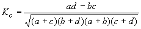

Определение. Альтернативными называются признаки, принимающие только два возможных значения.
Исследование их корреляции основано на показателях, построенных на четырехклеточных таблицах, в которые сводятся значения признаков:
a |
b |
c |
d |
Теснота связи характеризуется коэффициентом контингенции
,
принимающим значения в промежутке [-1; 1]. Он интерпретируется аналогично коэффициенту корреляции.